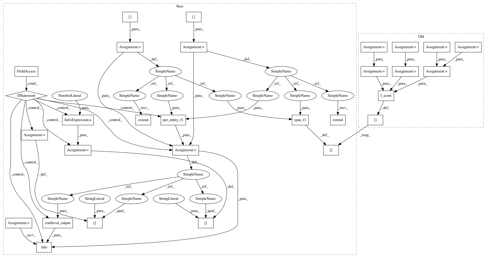

7a125ea5e0113ec9d10d010884cdc78419bffe6e,python/baseline/pytorch/tagger/train.py,TaggerTrainerPyTorch,_test,#TaggerTrainerPyTorch#Any#,71
Before Change
self.model.eval()
total_correct = 0
total_sum = 0
total_gold_count = 0
total_guess_count = 0
total_overlap_count = 0
metrics = {}
steps = len(ts)
conll_output = kwargs.get("conll_output", None)
txts = kwargs.get("txts", None)
handle = None
if conll_output is not None and txts is not None:
handle = open(conll_output, "w")
pg = create_progress_bar(steps)
for batch_dict in pg(ts):
inputs = self.model.make_input(batch_dict)
y = inputs.pop("y")
lengths = inputs["lengths"]
ids = inputs["ids"]
pred = self.model(inputs)
correct, count, overlaps, golds, guesses = self.process_output(pred, y.data, lengths, ids, handle, txts)
total_correct += correct
total_sum += count
total_gold_count += golds
total_guess_count += guesses
total_overlap_count += overlaps
total_acc = total_correct / float(total_sum)
// Only show the fscore if requested
metrics["f1"] = f_score(total_overlap_count, total_gold_count, total_guess_count)
metrics["acc"] = total_acc
return metrics
def _train(self, ts, **kwargs):
After Change
total_sum = 0
total_correct = 0
gold_spans = []
pred_spans = []
metrics = {}
steps = len(ts)
conll_output = kwargs.get("conll_output", None)
txts = kwargs.get("txts", None)
handle = None
if conll_output is not None and txts is not None:
handle = open(conll_output, "w")
pg = create_progress_bar(steps)
for batch_dict in pg(ts):
inputs = self.model.make_input(batch_dict)
y = inputs.pop("y")
lengths = inputs["lengths"]
ids = inputs["ids"]
pred = self.model(inputs)
correct, count, golds, guesses = self.process_output(pred, y.data, lengths, ids, handle, txts)
total_correct += correct
total_sum += count
gold_spans.extend(golds)
pred_spans.extend(guesses)
total_acc = total_correct / float(total_sum)
metrics["acc"] = total_acc
metrics["f1"] = span_f1(gold_spans, pred_spans)
if self.verbose:
// TODO: Add programmatic access to these metrics?
conll_metrics = per_entity_f1(gold_spans, pred_spans)
conll_metrics["acc"] = total_acc * 100
conll_metrics["tokens"] = total_sum.item()
logger.info(conlleval_output(conll_metrics))
return metrics
def _train(self, ts, **kwargs):
self.model.train()
In pattern: SUPERPATTERN
Frequency: 3
Non-data size: 29
Instances
Project Name: dpressel/mead-baseline
Commit Name: 7a125ea5e0113ec9d10d010884cdc78419bffe6e
Time: 2019-05-21
Author: blester125@users.noreply.github.com
File Name: python/baseline/pytorch/tagger/train.py
Class Name: TaggerTrainerPyTorch
Method Name: _test
Project Name: dpressel/mead-baseline
Commit Name: 7a125ea5e0113ec9d10d010884cdc78419bffe6e
Time: 2019-05-21
Author: blester125@users.noreply.github.com
File Name: python/baseline/tf/tagger/train.py
Class Name: TaggerEvaluatorTf
Method Name: test
Project Name: dpressel/mead-baseline
Commit Name: 7a125ea5e0113ec9d10d010884cdc78419bffe6e
Time: 2019-05-21
Author: blester125@users.noreply.github.com
File Name: python/baseline/dy/tagger/train.py
Class Name: TaggerTrainerDyNet
Method Name: _test
Project Name: dpressel/mead-baseline
Commit Name: 7a125ea5e0113ec9d10d010884cdc78419bffe6e
Time: 2019-05-21
Author: blester125@users.noreply.github.com
File Name: python/baseline/pytorch/tagger/train.py
Class Name: TaggerTrainerPyTorch
Method Name: _test